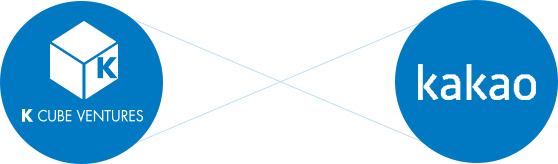

VISION
케이큐브벤처스는 스타트업이
세상을 더 아름답게
만든다고 믿습니다.
‘문제의식’과 ‘도전’
스타트업의 기저에 흐르고 있는 두 개의 큰 줄기이자
카카오와 같은 성공 사례를 만들어 낸 원동력 입니다.
케이큐브벤처스는 더 나은 세상을 위한 고민과 도전 정신을 가진 기업가분들이
세상을 바꾸는 혁신을 이루어 나갈 수 있다고 믿습니다.
‘창업’은 세상의 문제를 해결하는 과정이며, 궁극적으로는 삶의 질을 높인다고 믿습니다.
또한 인재들의 재능이 적재적소에 쓰이게 한다고 믿습니다.
그렇기에 창업자 분들을 진심으로 존경하고,
역량 있는 인재들이 창업하기에 좋은 환경을 조성하는데 최선을 다하고 있습니다.
앞으로도 케이큐브벤처스는 개인 뿐 아니라 사회 전반에
꿈과 혁신을 불어넣는 역할을 할 것입니다.
스타트업의 기저에 흐르고 있는 두 개의 큰 줄기이자
카카오와 같은 성공 사례를 만들어 낸 원동력 입니다.
케이큐브벤처스는 더 나은 세상을 위한 고민과 도전 정신을 가진 기업가분들이
세상을 바꾸는 혁신을 이루어 나갈 수 있다고 믿습니다.
‘창업’은 세상의 문제를 해결하는 과정이며, 궁극적으로는 삶의 질을 높인다고 믿습니다.
또한 인재들의 재능이 적재적소에 쓰이게 한다고 믿습니다.
그렇기에 창업자 분들을 진심으로 존경하고,
역량 있는 인재들이 창업하기에 좋은 환경을 조성하는데 최선을 다하고 있습니다.
앞으로도 케이큐브벤처스는 개인 뿐 아니라 사회 전반에
꿈과 혁신을 불어넣는 역할을 할 것입니다.
HOW WE INVEST
-
투자분야‘서비스, 기술기반, 게임’으로 구성된 핵심 투자분야에 집중하며, 관련 기술 및 산업이 포괄적으로 결합된 S/W및 ICT 분야의 다양한 혁신 기술 및 서비스들에 투자합니다
-
투자단계초기기업(Seed)부터 성장단계(Series A)에 있는 스타트업에 투자합니다. 좋은 팀과 역량을 갖춘 스타트업이라면 시기에 관계없이 투자합니다.
서비스 출시 전이나 법인 설립 전의 기업은 물론 창업팀을 구성할 때부터 기업가분들과 함께 고민합니다. 사업계획서 작성 Tip -
투자규모초기기업에 대한 5억원 내외의 Seed 단계 투자부터 20억 이상 규모의 Series A 투자까지 진행하며, 각 스타트업의 성장 단계와 사업 분야에 맞는 규모의 금액을 투자합니다.
‘중소기업청 민간투자주도형 기술창업프로그램(TIPS)’운영 기관으로서 ‘글로벌’ 혹은 ‘기술기반’ 연관 사업일 경우정부로부터 추가 자금을 유치할 수 있도록 지원합니다. -
투자기준‘사람이 전부’라는 투자 철학으로, 해당 사업을 위해 모인 Team이 해결하려는 문제와 그 문제를 해결 할 수 있는 역량을 보유하고 있는지 살펴봅니다.
‘사명감’을 갖고 사업을 하는 분들이 성공한다고 믿기 때문입니다.
또한, 사람들이 불편해 하는 세상의 ‘문제’를 해결해 주는 ‘Painkiller’ 와같은 사업에 투자하는 것을 가치 있게 생각합니다.
Our Funds

창업투자사(Venture Capital)의 근본적인 목적은 도전이 한계를 이기고
실력이 거대 자본을 넘어설 수 있는 환경을 만들기 위함입니다.
케이큐브벤처스는 잠재력 있는 인재에게 가장 필요한 시기에 자금을 지원한다는 원칙 아래
유망 기업가들을 적극 발굴하고, 그들이 혁신을 만들어 갈 수 있도록 지원하고 있습니다.
이를 통해 IT 산업의 혁신과 벤처 생태계의 선 순환에 기여해나갈 것 입니다.
실력이 거대 자본을 넘어설 수 있는 환경을 만들기 위함입니다.
케이큐브벤처스는 잠재력 있는 인재에게 가장 필요한 시기에 자금을 지원한다는 원칙 아래
유망 기업가들을 적극 발굴하고, 그들이 혁신을 만들어 갈 수 있도록 지원하고 있습니다.
이를 통해 IT 산업의 혁신과 벤처 생태계의 선 순환에 기여해나갈 것 입니다.
투자조합 결성 Milestone
- 2012년: 케이큐브1호벤처투자조합 [115.6억원]
- 2013년: 카카오청년창업펀드 [300억원]
- 2015년: 카카오디지털콘텐츠펀드 [341억원]
- 2016년: 카카오성장나눔게임펀드 [300억원]
HOW WE VALUE UP
-
01 영역별 전문 투자 파트너단순히 재무적인 관점의 투자를 넘어 IT 산업을 이해하고 있는 영역별 투자 파트너들이 함께합니다.
S/W 및 ICT 산업에서의 각자 15년 이상의 오랜 경험과 인사이트를 보유했으며IT업계 전반의 핵심인력과 교류할 수 있는 네트워크를 보유해 스타트업이 마주칠 다양한 경영 및 사업적 사안에 대해 실질적인 도움을 제공합니다. -
02 적극적인 지원스타트업은 성장 단계별로 다양한 변곡점을 마주하게 됩니다. 인재 영입, 추가 투자 유치, 해외진출, 대기업과의 사업협력, 대외 홍보 등 스타트업이 진정한 기업으로 성장하는 데 필요한 도움을 제공하고 있습니다.
특히 국내 최고의 모바일 인사이트를 보유한 카카오와의 사업 협력을 고려하고 있는 스타트업에게는 카카오와 적시에 협력할 수 있는 기회를 적극 도모하고 있습니다. -
03 케이큐브 패밀리 문화케이큐브벤처스가 투자한 핵심 인재들이 서로 밀어주고 끌어주며 함께 성장하는 ‘패밀리 문화’를 만들어 가고 있습니다. 투자한 기업의 CEO 들과 Advisor들이 서로 인사이트를 공유하며 편하게 교류 할 수 있는 정기 모임을 월 1회 이상 마련하고 있습니다. 또한 기업가분들이 서로 궁금한 점을 논의 할수 있는 플랫폼을 제공하고 있으며, One-point lesson이 필요한 경우 해당 분야의 적임자를 찾아 연결해 드립니다.
-
04 경영/사업 운영 지원사업을 하다 보면 세무/법무/회계와 같은 이슈와 홍보/마케팅, HR 이슈에 자주 부딪히게 됩니다.
케이큐브벤처스의 내부 전문가들이 해당 이슈에 대해 실질적인 도움을 드립니다. 나아가 외부의 검증된 파트너들을 연결해 전문적인 도움을 받으실 수 있도록 지원하고 있습니다.
Join the K Cube Family
세상의 문제에 깊게 공감하며 ‘판을 뒤집을 수 있는’
꿈과 비전을 쫓는 기업가분들을 존경합니다.
세상에 필요한 일을 한다는 믿음 하나로 미래의 불확실성 속에서 수 많은 난관을 극복해 나가고 있기 때문입니다.
케이큐브벤처스는 이러한 기업가분들의 협력에서 시너지가 발생한다고 생각합니다.
그래서 인재들이 서로 밀어주고 끌어주며 하나의 그룹처럼 움직이는 ‘케이큐브 패밀리 문화’를 만들어가고 있습니다.
개별 인재들이 잘 해 나가는 경우는 종종 있지만,
특급 인재들이 큰 꿈을 가지고 함께 혁신을 도모하는 사례는 흔치 않습니다.
기존 조직에서 개인을 위한 성과를 내던 사람들도
자신이 믿는 문제를 풀어 나가기 위해 만든 스타트업에서는 더 높은 차원의 성과를 냅니다.
이러한 사람들이 모여 함께 성장해 나간다면 전에 없던 시너지를 발휘할 수 있습니다.
세상에 필요한 일을 한다는 믿음 하나로 미래의 불확실성 속에서 수 많은 난관을 극복해 나가고 있기 때문입니다.
케이큐브벤처스는 이러한 기업가분들의 협력에서 시너지가 발생한다고 생각합니다.
그래서 인재들이 서로 밀어주고 끌어주며 하나의 그룹처럼 움직이는 ‘케이큐브 패밀리 문화’를 만들어가고 있습니다.
개별 인재들이 잘 해 나가는 경우는 종종 있지만,
특급 인재들이 큰 꿈을 가지고 함께 혁신을 도모하는 사례는 흔치 않습니다.
기존 조직에서 개인을 위한 성과를 내던 사람들도
자신이 믿는 문제를 풀어 나가기 위해 만든 스타트업에서는 더 높은 차원의 성과를 냅니다.
이러한 사람들이 모여 함께 성장해 나간다면 전에 없던 시너지를 발휘할 수 있습니다.